Aplicație GIS pentru Windows
Cadastru
Manual de utilizare · versiunea 1.13.0
Cadastru este o aplicație GIS de birou pentru Windows. Deschide hărți vectoriale și raster, le afișează împreună în orice sistem de coordonate, le convertește între formate și le reproiectează, inclusiv cu transformarea oficială TransDatRO a ANCPI. Are hărți de fundal online, instrumente de identificare și măsurare, tipărire și export PDF.
cadastru-cli.exe pentru conversii și transformări automate.Aplicația nu are program de instalare și nu folosește biblioteci externe (DLL). Copiați dosarul Cadastru oriunde doriți, local sau pe un disc de rețea, și porniți cadastru.exe cu dublu-click.
Fereastra se deschide maximizată, pe tot ecranul (bara de titlu și bara de activități Windows rămân vizibile; butonul de restaurare din colțul ferestrei o micșorează). La pornire, harta este în Stereo 70 (EPSG:3844), centrată pe România, cu harta de fundal OpenStreetMap. Fișierele pot fi deschise imediat (capitolul 3).
| Fișier / dosar | Rol |
|---|---|
cadastru.exe | Aplicația cu interfață grafică. |
cadastru-cli.exe | Linia de comandă, pentru conversii în scripturi (capitolul 12). |
Manual_Cadastru.pdf | Acest manual. Este inclus și în aplicație: Ajutor → Manual de utilizare sau tasta F1. |
Documentatie_tehnica_Cadastru.pdf | Descrierea tehnică a aplicației: arhitectură, algoritmi, formate, construire din sursă. |
CITESTE-MA.md | Rezumatul funcțiilor, în format text. |
exemple\ | Date de test în toate formatele și spațiul de lucru test.cgw. |
sursa\ | Codul sursă complet (Rust). |
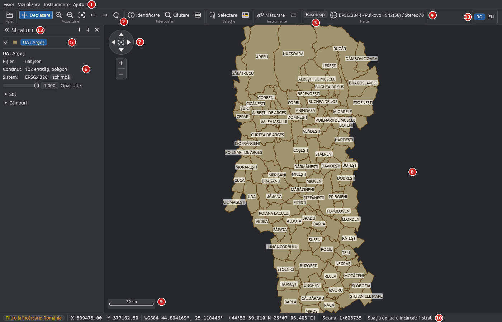
Bara de meniuri are, în ordine: Fișier, Editare, Selectare, Vizualizare, Instrumente și Ajutor.
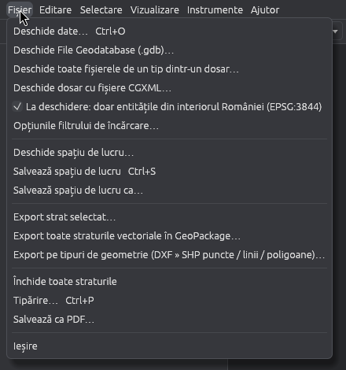
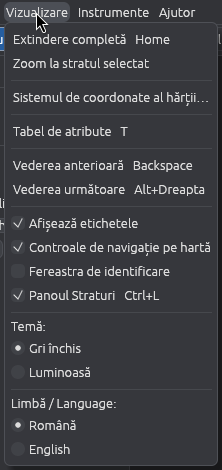
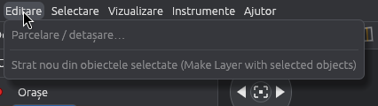
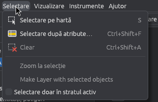
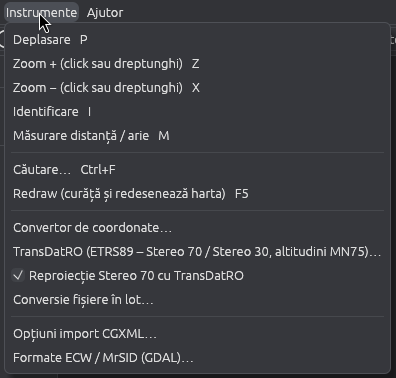
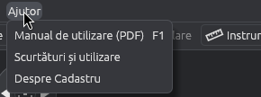
| Meniu | Conține |
|---|---|
| Fișier | Deschidere de date, File Geodatabase, toate fișierele de un tip dintr-un dosar și dosare CGXML; filtrul de încărcare (doar entitățile din România); spațiul de lucru (deschide, salvează, salvează ca); export; închiderea tuturor straturilor; Tipărire și Salvează ca PDF; ieșire. |
| Editare | Parcelare / detașare a poligonului selectat (secțiunea 7.10) și Strat nou din obiectele selectate (Make Layer with selected objects, secțiunea 7.11). |
| Selectare | Selectare pe hartă (S), Selectare după atribute… (Ctrl+Shift+F), Clear – golește selecția din toate straturile, pe toată harta (Ctrl+Shift+A); apoi Zoom la selecție, Make Layer with selected objects (pentru stratul activ) și bifa Selectare doar în stratul activ (secțiunile 7.7, 7.9, 7.11). |
| Vizualizare | Extindere completă, zoom la stratul selectat, sistemul hărții, tabelul de atribute, vederea anterioară/următoare, afișarea etichetelor, controlul de navigație, fereastra de identificare, panoul Straturi (Ctrl+L), tema (gri închis sau luminoasă), limba interfeței (română sau engleză). |
| Instrumente | Instrumentele hărții (Deplasare, Zoom + / −, Identificare, Măsurare), Căutare, Redraw, convertorul de coordonate, TransDatRO, alegerea metodei pentru Stereo 70 (TransDatRO sau Helmert), conversia în lot, opțiunile de import CGXML, Formate ECW / MrSID (GDAL) (secțiunea 3.10). |
| Ajutor | Manualul de utilizare (acest document, F1), lista de scurtături, informații despre aplicație și autor. |
Instrumentele sunt grupate pe funcționalități în liste derulante: un click pe numele grupului (cu săgeata ▾) deschide lista instrumentelor lui, fiecare cu pictogramă și tastă; instrumentul activ e evidențiat. Grupurile cu un singur instrument (Deschide, Parcelare) rămân butoane simple. Butonul grupului arată pictograma instrumentului activ (de exemplu lupa, când e ales Zoom +) și se colorează când instrumentul activ face parte din grup. Pe ecranele foarte înguste (sub circa 900 de puncte) rămân doar pictogramele; numele sunt în indicii.
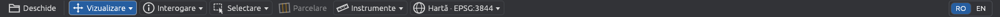
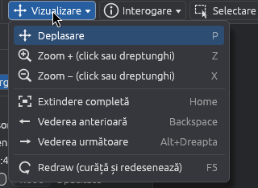
| Listă / buton | Conține |
|---|---|
| Deschide | Deschide fișiere de date (Ctrl+O). |
| Vizualizare ▾ | Deplasare (P), Zoom + (Z), Zoom − (X), Extindere completă (Home), vederea anterioară / următoare (Backspace / Alt+→), Redraw (F5, secțiunea 4.4). |
| Interogare ▾ | Identificare (I, secțiunea 7.1), Căutare (Ctrl+F, secțiunea 7.8), Tabel de atribute (T, secțiunea 7.3). |
| Selectare ▾ | Selectare pe hartă (S), Selectare după atribute (Ctrl+Shift+F), Clear (Ctrl+Shift+A), Zoom la selecție, Make Layer with selected objects – la fel ca meniul Selectare. |
| Parcelare | Parcelarea / detașarea poligonului selectat (secțiunea 7.10); activ doar când e selectat un singur poligon. |
| Instrumente ▾ | Măsurare (M, secțiunea 7.2), Convertor de coordonate (secțiunea 7.5). |
| Hartă · EPSG:… ▾ | Basemap (capitolul 5) și sistemul hărții (secțiunea 8.1); codul sistemului curent apare pe buton. |
| RO | EN | Comutatorul de limbă, în dreapta barei (secțiunea 2.5). |
Mărirea și micșorarea în centrul hărții se fac și cu tastele + −, rotița mouse-ului și butoanele + / − de pe hartă.
În stânga se află lista straturilor. Stratul aflat sus în listă se desenează deasupra celorlalte. Bifa din dreptul fiecărui strat îl ascunde sau îl afișează. Click pe nume selectează stratul. Dedesubt apar proprietățile lui (capitolul 6). Săgețile ↑ ↓ din antetul panoului urcă sau coboară stratul selectat, iar × îl elimină.
Lățimea panoului se reglează trăgând cu mouse-ul marginea lui dreaptă, inclusiv mult spre stânga. Numele prea lungi pentru lățimea aleasă se termină cu „…”; numele întreg (împreună cu fișierul, conținutul și sistemul de coordonate) apare în indiciu când țineți mouse-ul deasupra.
Ascunderea panoului. Butonul « din colțul stâng al antetului, comanda Vizualizare → Panoul Straturi sau Ctrl+L ascund complet panoul (la fel și trăgând marginea până la capăt spre stânga): harta ocupă toată lățimea ferestrei. În stânga rămâne doar o bandă îngustă, cu » și textul Straturi (n); un click oriunde pe ea readuce panoul, la lățimea avută. Starea panoului se păstrează la repornire.
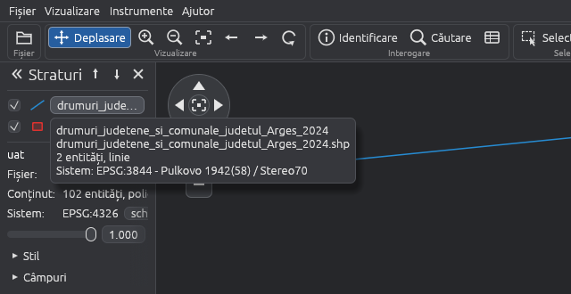
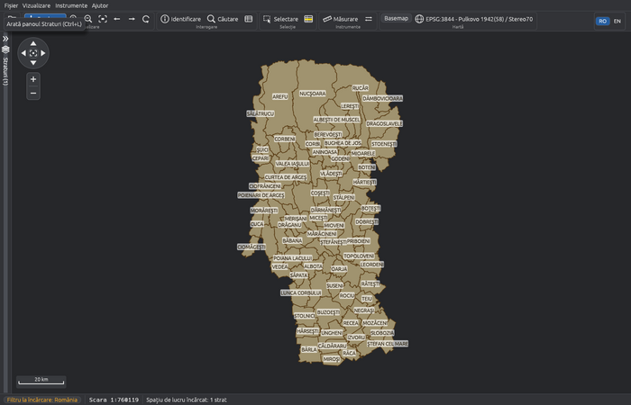
Bara de stare de jos arată coordonatele cursorului în sistemul hărții (X, Y), aceleași coordonate în WGS84, în grade zecimale și în grade-minute-secunde, scara numerică a hărții și ultimul mesaj al aplicației (de exemplu numărul de entități încărcate sau o eroare). Cât timp filtrul de încărcare este activ, în stânga apare indicatorul Filtru la încărcare: România (secțiunea 3.8).
.prj) este scris cu portocaliu. Vezi secțiunea 3.6.Aplicația are două teme: gri închis (implicită) și luminoasă. Se schimbă din Vizualizare → Temă, iar alegerea se păstrează la repornire.
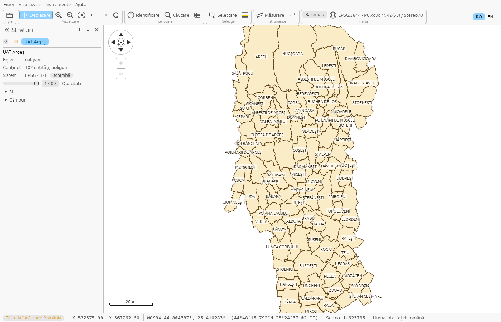
Interfața poate fi afișată în română (limba implicită) sau în engleză. Limba se schimbă oricând, fără repornire:
Se traduc meniurile, butoanele, ferestrele de dialog, mesajele din bara de stare, erorile și textele planșei tipărite (legendă, scară, sistem, dată). Alegerea se păstrează la repornire, în setari.json.
Nu se traduc datele: numele straturilor și ale câmpurilor, valorile atributelor și numele fișierelor rămân cum sunt în fișiere. Acest manual și linia de comandă (cadastru-cli) sunt în limba română; în engleză, meniul Ajutor indică „User manual (PDF, Romanian)”.
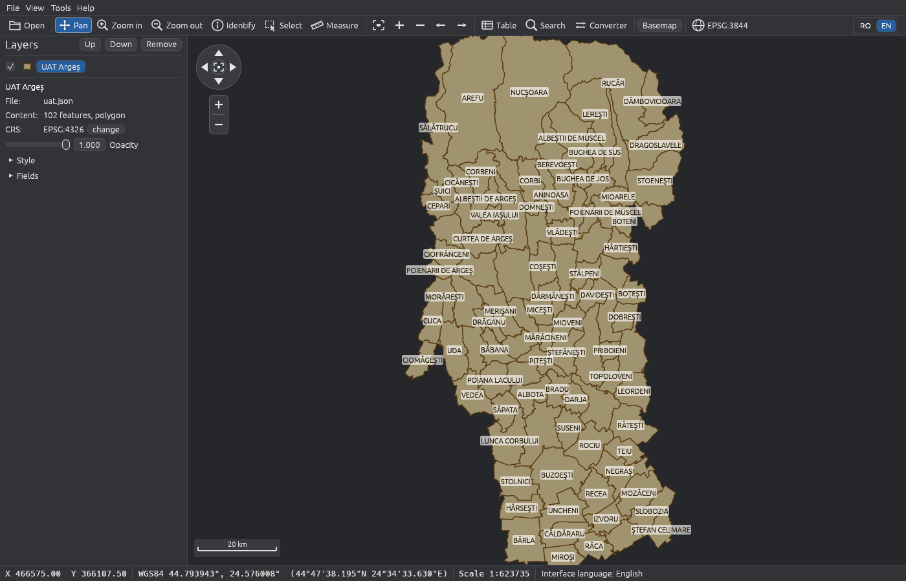
.gdb (secțiunea 3.4).cadastru.exe parcele.shp orto.tif. Un fișier .cgw dat ca argument deschide spațiul de lucru.Dacă bifa Fișier → La deschidere: doar entitățile din interiorul României este activă, din fișierele vectoriale se încarcă doar entitățile aflate în România (secțiunea 3.8).
Fișierele mari se încarcă în fundal: aplicația rămâne utilizabilă, iar la final bara de stare arată ce s-a încărcat. Un GeoPackage, un File Geodatabase sau un KML cu mai multe straturi adaugă câte un strat pentru fiecare.
| Format | Extensii | Citire | Scriere | Observații |
|---|---|---|---|---|
| ESRI Shapefile | .shp .dbf .prj .cpg | ✔ | ✔ | 2D/3D, poligoane cu goluri; codificarea DBF este detectată automat; scriere în UTF-8 sau Windows-1250. |
| GeoPackage | .gpkg | ✔ | ✔ | Toate straturile; mai multe straturi într-un fișier. |
| GeoJSON | .geojson .json | ✔ | ✔ | Sistemul din membrul „crs”, altfel WGS84. |
| KML / KMZ | .kml .kmz | ✔ | ✔ | Foldere, ExtendedData; la scriere datele trec automat în WGS84. |
| GPX | .gpx | ✔ | ✔ | Puncte, rute, trasee, cotă. |
| AutoCAD DXF | .dxf | ✔ | ✔ | Linii, polilinii (cu arce), cercuri, texte, blocuri, hașuri; punctele cu „RTCM” în descriere sunt eliminate (secțiunea 3.9); scriere DXF R12. |
| CSV / text | .csv .txt | ✔ | ✔ | Coloane X/Y/Z sau WKT; dialog de import (secțiunea 3.3). |
| GeoTIFF | .tif .tiff | ✔ | ✔ | 8–64 biți, RGB, paletă, compresii uzuale, NoData, BigTIFF. |
| ESRI ASCII Grid | .asc | ✔ | ✔ | Modele digitale ale terenului. |
| Imagini georeferențiate | .png .jpg .bmp + world file | ✔ | ✔* | *PNG și JPEG; la scriere se creează world file, .prj și .aux.xml. |
| CGXML (ANCPI) | .cgxml, .zip, dosar | ✔ | – | Straturile „teren” și „constructii” (secțiunea 3.5). |
| Esri File Geodatabase | dosar .gdb | ✔ | – | Fără ArcGIS (secțiunea 3.4). |
| ECW | .ecw | ✔* | – | *Doar vizualizare, prin GDAL-ul din QGIS / OSGeo4W (secțiunea 3.10). |
| MrSID | .sid | ✔* | – | *Doar vizualizare, prin GDAL cu pachetul gdal-mrsid (secțiunea 3.10). |
| JPEG 2000 | .jp2 | ✔* | – | *Doar vizualizare, prin GDAL (secțiunea 3.10). |
La deschiderea unui fișier CSV sau TXT apare dialogul de import. Aplicația recunoaște singură separatorul (virgulă, punct și virgulă, tab), zecimalele cu virgulă și coloanele de coordonate. Verificați și, la nevoie, corectați:
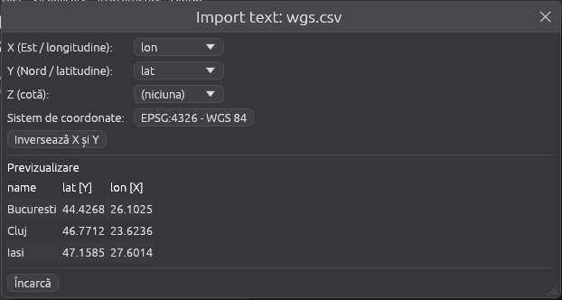
Un fișier cu o coloană de geometrie în format WKT (POLYGON((…))) este recunoscut automat.
Un File Geodatabase este un dosar cu extensia .gdb. Se deschide din Fișier → Deschide File Geodatabase (.gdb)… (alegeți chiar dosarul .gdb), prin tragerea dosarului peste fereastră sau alegând din Deschide date orice fișier .gdbtable din interiorul lui. Fiecare feature class devine un strat, inclusiv cele din feature dataset-uri.
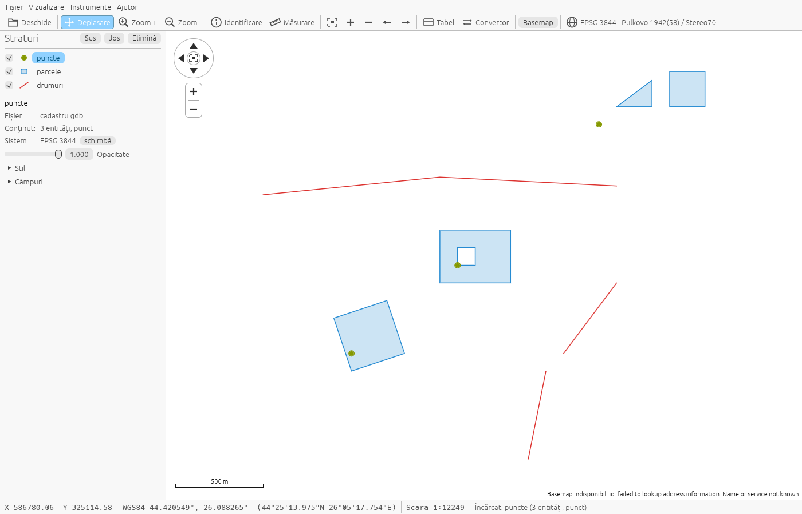
exemple\cadastru.gdb, cu trei feature class-uri..mdb), multipatch, adnotările, câmpurile binare și raster. Scrierea în .gdb nu este disponibilă: exportați în GeoPackage sau Shapefile.Fișierele .cgxml, arhivele .zip care le conțin și dosarele întregi sunt convertite la deschidere în două straturi: teren (parcelele) și constructii, în Stereo 70. Conversia urmează regulile programului CGXML2SHP: punctele sortate după număr, eliminarea punctelor duplicate, enclavele și parcelele din mai multe părți. Parcelele sunt etichetate automat cu numărul cadastral.
Statisticile conversiei (fișiere, terenuri, puncte, enclave, părți multiple, puncte ignorate) apar în bara de stare.
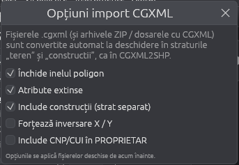
| Opțiune | Efect |
|---|---|
| Închide inelul poligon | Adaugă ultimul punct egal cu primul dacă inelul nu este închis. |
| Atribute extinse | Câmpurile complete (suprafețe, sector, topo, categorie de folosință, acte, proprietari); debifat, doar câmpurile de bază. |
| Include construcții | Creează și stratul „constructii”. |
| Forțează inversare X / Y | Pentru fișierele cu X și Y schimbate între ele. |
| Include CNP/CUI în PROPRIETAR | Dezactivat implicit, pentru protecția datelor personale (GDPR). |
Din meniul contextual al unui strat CGXML se pot salva fișierele teren.shp și constructii.shp sau se poate reîncărca lucrarea cu X și Y inversate.
.prj, GeoPackage, cheile GeoTIFF, definiția din GeoJSON sau File Geodatabase). Fișierele .prj scrise de ArcGIS pentru „Stereo_70” sunt recunoscute ca EPSG:3844.Fișier → Deschide toate fișierele de un tip dintr-un dosar… deschide deodată, de exemplu, toate shapefile-urile dintr-o lucrare organizată pe subdosare.
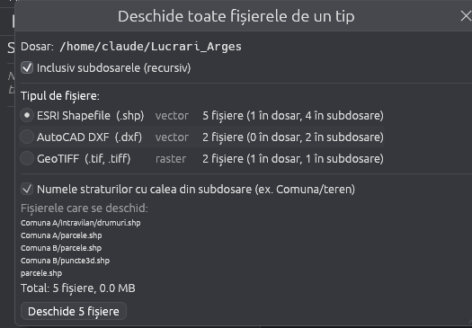
Fișierele se citesc în fundal, pe mai multe fire, iar straturile apar pe hartă pe măsură ce sunt gata; la final harta se încadrează pe ele. În bara de stare, butonul Oprește (k/N) întrerupe deschiderea; straturile deja încărcate rămân. Fișierele care nu pot fi citite sunt raportate la final, într-o singură listă.
Straturile primesc ca nume calea din subdosare, de exemplu Comuna A/parcele, ca să se deosebească fișierele cu același nume din dosare diferite (opțiunea poate fi debifată). Un GeoPackage sau un File Geodatabase cu mai multe straturi dă nume de forma Comuna A/date · parcele. Dosarele .gdb apar ca tipul „Esri File Geodatabase”.
Seturile de date naționale sau europene conțin adesea entități din afara țării (puncte cu coordonate greșite, vecini, date de test). Bifa Fișier → La deschidere: doar entitățile din interiorul României (EPSG:3844) le lasă afară încă de la încărcare: în aplicație ajung numai entitățile aflate în interiorul încadrării României în Stereo 70.
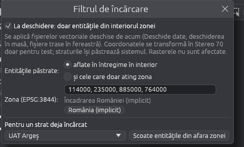
Cum se face testul. Coordonatele fiecărei entități se transformă în Stereo 70 (EPSG:3844) doar pentru test; stratul își păstrează sistemul și coordonatele originale. Un fișier fără sistem de coordonate este luat în sistemul ghicit după valori (WGS84 sau Stereo 70). Entitățile fără geometrie sunt și ele lăsate afară.
Zona implicită este dreptunghiul 114000, 235000 – 885000, 764000 (X min, Y min – X max, Y max, în metri, EPSG:3844): încadrarea României între 20,22°–29,76° E și 43,62°–48,27° N, rotunjită la kilometru. Este un dreptunghi, nu conturul țării: zonele vecine din colțurile lui (de exemplu nordul Bulgariei, estul Serbiei) trec de filtru.
Din Fișier → Opțiunile filtrului de încărcare… se pot alege:
minX, minY, maxX, maxY (de exemplu încadrarea unui județ); butonul România (implicit) revine la valorile de mai sus;--doar-romania (capitolul 12).Desenele DXF exportate din receptoarele și programele GNSS conțin adesea și punctele stațiilor de bază de la care au venit corecțiile RTK – stația permanentă (de exemplu ROMPOS) sau baza proprie –, cu descrierea RTCM (după formatul corecțiilor). Aceste puncte sunt de obicei la zeci de kilometri de lucrare, așa că extinderea completă și zoom-ul la strat ar arăta o zonă mult prea mare.
De aceea, la deschiderea unui fișier .dxf, Cadastru elimină automat punctele care conțin „RTCM” în descriere (fără deosebire între majuscule și minuscule: RTCM 3.2, rtcm_ref, Baza RTCM):
DESCRIERE = RTCM) sau într-un text din bloc, împreună cu desenul blocului;Restul desenului – linii, poligoane, celelalte puncte și texte – rămâne neschimbat; fișierul de pe disc nu se modifică. Bara de stare arată ce s-a eliminat, de exemplu DXF: eliminate 3 puncte cu „RTCM” în descriere (10 entități, cu etichetele lor). Regula se aplică oriunde se deschide un DXF: Deschide date…, fișierele trase peste fereastră, deschiderea în masă, exportul pe tipuri de geometrie și conversiile. În linia de comandă, opțiunea --dxf-pastreaza-rtcm păstrează aceste puncte (capitolul 12).
exemple\ridicare_gnss.dxf conține o ridicare GNSS cu trei puncte RTCM (baza locală, o stație permanentă și un bloc cu atributul DESCRIERE = rtcm_ref): la deschidere rămân 50 din 60 de entități, iar zoom-ul la strat arată doar parcela.ECW și MrSID sunt formate proprietare, folosite des pentru ortofotoplanuri. Decodarea lor are nevoie de bibliotecile producătorilor (ERDAS ECW/JP2 SDK – Hexagon, MrSID Decode SDK – Extensis / LizardTech). Acestea sunt gratuite pentru citire, dar nu pot fi incluse într-o aplicație distribuită sub licența MIT. De aceea Cadastru le citește prin GDAL-ul unei instalări QGIS sau OSGeo4W de pe același calculator:
qgis.org): instalatorul complet include citirea ECW. Pentru MrSID, porniți OSGeo4W Setup din meniul Start al QGIS, alegeți Advanced Install și bifați pachetul gdal-mrsid.gdal-ecw și gdal-mrsid.Cadastru găsește singur GDAL-ul în C:\Program Files\QGIS … (cea mai nouă versiune), C:\OSGeo4W sau în PATH, la deschiderea primului fișier ECW / MrSID. Fereastra Instrumente → Formate ECW / MrSID (GDAL)… arată versiunea GDAL găsită și driverele disponibile (ECW, MrSID, JPEG 2000) și permite alegerea manuală a dosarului bin al altei instalări (de exemplu C:\Program Files\QGIS 3.40.5\bin). Fără GDAL, restul aplicației funcționează normal; doar aceste formate nu se deschid.
Fișierele .ecw, .sid și .jp2 se deschid ca orice raster (Deschide date…, trase peste fereastră, spațiul de lucru). Pentru că au adesea zeci de mii de pixeli pe latură, în memorie se ține doar o imagine de ansamblu (cel mult 4096 px pe latură); la zoom, detaliul se citește din fișier doar pentru zona vizibilă, la rezoluția ecranului, iar la tipărire la rezoluția planșei. Identificarea arată valorile pixelului la rezoluția completă. Informații raster arată formatul, dimensiunea reală și mărimea pixelului.
| Acțiune | Efect |
|---|---|
| Rotița mouse-ului | Zoom față de poziția cursorului. |
| Tragere cu butonul stâng | Deplasarea hărții, cu instrumentele Deplasare, Identificare și Măsurare. |
| Tragere cu butonul din mijloc | Deplasarea hărții, cu orice instrument. |
| Dublu-click (Deplasare) | Zoom ×2 în punctul ales. |
| Săgețile tastaturii | Deplasare cu un sfert de ecran. |
| + / − | Mărire / micșorare. |
| Home | Extindere completă. |
| Backspace / Alt+→ | Vederea anterioară / următoare. |
În colțul din stânga-sus al hărții se află controlul de navigație. Un click pe o săgeată deplasează harta cu un sfert de ecran, iar o săgeată ținută apăsată o deplasează continuu. Butonul din centru face extinderea completă, iar butoanele + și − măresc și micșorează harta. Controlul se poate ascunde din Vizualizare → Controale de navigație pe hartă.
Vizualizare → Zoom la stratul selectat (sau click dreapta pe strat → Zoom la strat) arată întregul strat. Extindere completă arată toate straturile. Când nu este deschis niciun strat, extinderea completă arată toată România.
Redraw din lista Vizualizare a barei de instrumente, Instrumente → Redraw sau tasta F5 fac ceea ce fac REDRAW / REDRAWALL și REGEN în programele CAD:
Vederea (centrul și scara), straturile, stilurile și selecțiile rămân neschimbate. Bara de stare arată câte straturi au fost regenerate și în cât timp.
Basemap, din lista Hartă a barei de instrumente, alege harta de fundal. Hărțile sunt grupate pe furnizori, în submeniuri. Lista conține și opțiunea Fără basemap.
La pornire este afișată harta OpenStreetMap standard. Alegerea făcută se păstrează în spațiul de lucru.
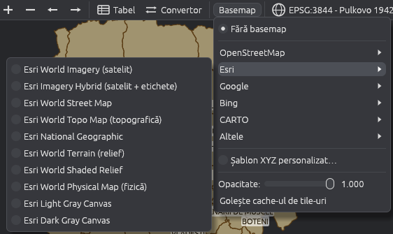
| Furnizor | Hărți |
|---|---|
| OpenStreetMap | Standard (implicită la pornire), Humanitarian, France, DE, CyclOSM, OpenTopoMap (topografică). |
| Esri | World Imagery (satelit), Imagery Hybrid (satelit + etichete), Street Map, Topo Map, National Geographic, Terrain, Shaded Relief, Physical Map, Light Gray și Dark Gray Canvas. |
| Hărți, Satelit, Hibrid, Teren. | |
| Bing | Aerial, Hibrid. |
| CARTO | Positron, Dark Matter, Voyager. |
| Altele | TopPlusOpen (BKG, topografică), Sentinel-2 cloudless (EOX). |
https://server/{z}/{x}/{y}.png. Mai sunt acceptate {s} (subdomeniu), {-y} (TMS) și {q} (quadkey).%LOCALAPPDATA%\Cadastru\tile-cache) și se reîmprospătează după 30 de zile. Fără internet sunt folosite cele din cache. Cache-ul se golește din meniul Basemap și nu depășește circa 1 GB.HTTPS_PROXY / HTTP_PROXY. Scripturile de configurare automată (PAC) nu sunt suportate.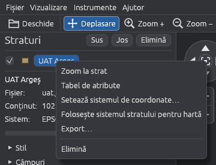
.prj sau cu .prj greșit. Datele nu sunt transformate, doar interpretate altfel.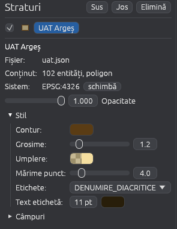
Deschideți secțiunea Stil din proprietățile stratului:
Secțiunea Câmpuri listează câmpurile stratului și tipul lor.
Etichetele care s-ar suprapune nu sunt desenate. Toate etichetele pot fi ascunse din Vizualizare → Afișează etichetele. Setările halo-ului sunt pe fiecare strat în parte, se păstrează în spațiul de lucru și se aplică la fel pe planșa tipărită și în PDF.
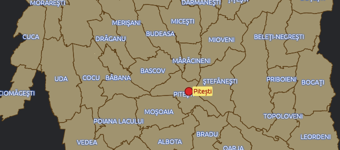
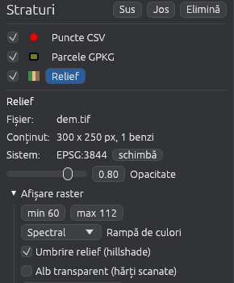
Pentru un strat raster, secțiunea Afișare raster oferă:
Valorile NoData sunt transparente. Informații raster arată tipul datelor, mărimea pixelului și extinderea (pentru ECW / MrSID și formatul și dimensiunea reală, secțiunea 3.10).
Cu instrumentul Identificare (I), click pe hartă. Fereastra Identificare arată atributele entității de sub cursor, evidențiată cu albastru pe hartă, și valorile pixelilor din toate rasterele din acel punct. Pentru poligoane se afișează și aria și perimetrul, iar pentru linii lungimea. Pentru un strat în grade (de exemplu WGS84) valorile sunt calculate în sistemul proiectat al hărții, iar sistemul este menționat în paranteză. Butonul Zoom la entitate centrează harta pe ea.
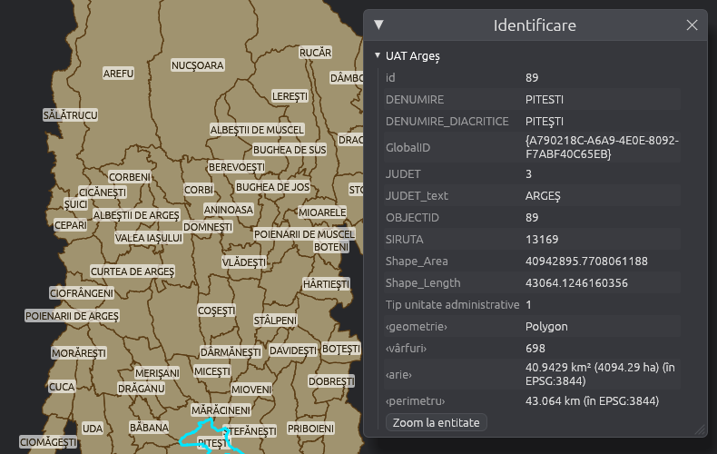
Cu instrumentul Măsurare (M), dați click în punctele traseului. Dublu-click încheie măsurarea, iar Esc o șterge. În colțul hărții apar:
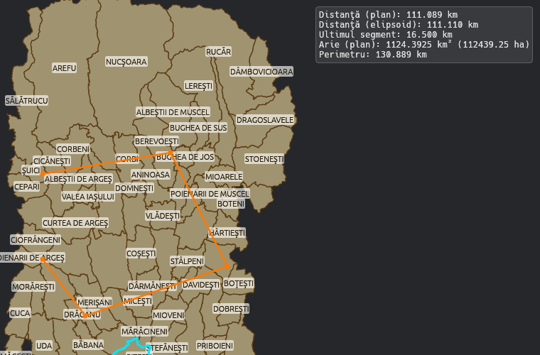
Butonul Tabel (T) deschide tabelul de atribute. Stratul se alege din lista Strat. Caseta Filtru păstrează doar rândurile care conțin textul căutat, în orice câmp. Click pe antetul unei coloane sortează după acea coloană. Click pe un rând selectează entitatea și o evidențiază pe hartă, iar dublu-click face zoom la ea. Selectarea unei entități pe hartă cu Identificare derulează tabelul la rândul ei. Tabelul lucrează împreună cu selecția (secțiunea 7.7): Ctrl+click adaugă sau scoate un rând, Shift+click selectează un interval, iar bifa Doar selecția arată numai entitățile selectate.
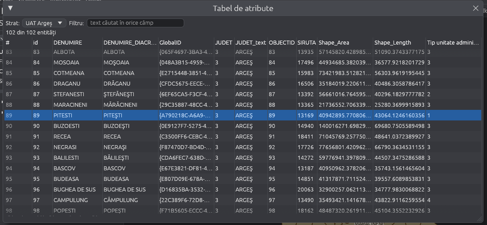
Click dreapta pe hartă deschide un meniu cu: copierea coordonatelor punctului (în sistemul hărții), copierea latitudinii și longitudinii WGS84, centrarea hărții, identificarea în acel punct și extinderea completă.
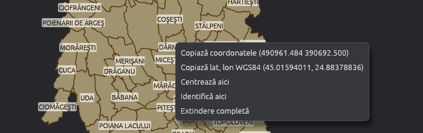
Butonul Convertor transformă coordonate între oricare două sisteme. Alegeți sistemele Din și În (Inversează le schimbă între ele) și introduceți coordonatele. Rezultatul apare imediat, cu metoda folosită. Bifa Preia punctul printr-un click pe hartă completează coordonatele din hartă. Pentru Stereo 70 se poate transforma și altitudinea: H Marea Neagră 1975 ↔ h elipsoidal ETRS89.
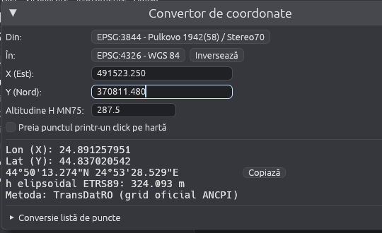
Secțiunea Conversie listă de puncte transformă o listă lipită din Excel sau dintr-un fișier text, cu rânduri „X Y” sau „ID X Y”. Rezultatul poate fi copiat înapoi.
Instrumente → TransDatRO deschide transformările oficiale ANCPI, cu aceleași rezultate ca programul TransDatRO:
Partea de sus transformă un punct. Coordonatele geografice se pot scrie în grade-minute-secunde (44 38 43.52664) sau în grade zecimale. Partea de jos transformă o listă sau un fișier în formatul programului TransDatRO: un rând de titlu, apoi „cod, coordonata 1, coordonata 2[, altitudine]” pe fiecare rând, opțional ENDF la final. Rezultatul se poate salva, copia sau adăuga pe hartă ca strat de puncte.
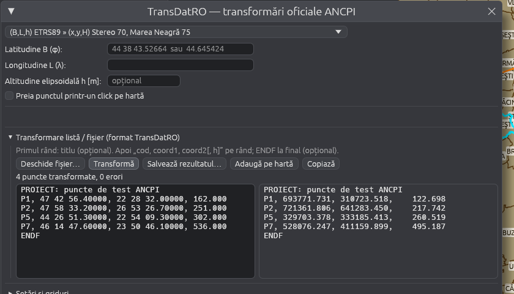
grile), alege metoda pentru reproiecția datelor Stereo 70 și permite folosirea doar a cvasigeoidului național EGG97 pentru altitudini (fără gridul București-Ilfov).Instrumentul Selectare (S) alege una sau mai multe entități din straturile vectoriale. Entitățile selectate sunt desenate cu galben, iar în lista straturilor numărul lor apare lângă numele stratului, de exemplu UAT Argeș [7].
| Acțiune | Efect |
|---|---|
| Click pe o entitate | Selectează doar acea entitate (selecția anterioară se golește). |
| Click în afara entităților | Golește selecția. |
| Ctrl+click | Adaugă entitatea la selecție sau o scoate, dacă era selectată. |
| Trageți un dreptunghi | Selectează toate entitățile atinse de dreptunghi. |
| Shift (sau Ctrl) + dreptunghi / click | Adaugă la selecția existentă. |
| Alt + dreptunghi / click | Scoate din selecție. |
| Esc (cu instrumentul Selectare), Ctrl+Shift+A sau Clear din meniul și lista Selectare | Golește selecția din toate straturile, pe toată harta. |
Implicit se selectează din toate straturile vectoriale vizibile; la click, câștigă stratul de deasupra (întâi punctele, apoi liniile, apoi poligoanele). Bifa Selectare → Selectare doar în stratul activ limitează selecția la stratul ales în listă. Dreptunghiul selectează și poligoanele care îl cuprind, și liniile care îl traversează, nu doar entitățile cu vârfuri în interior.
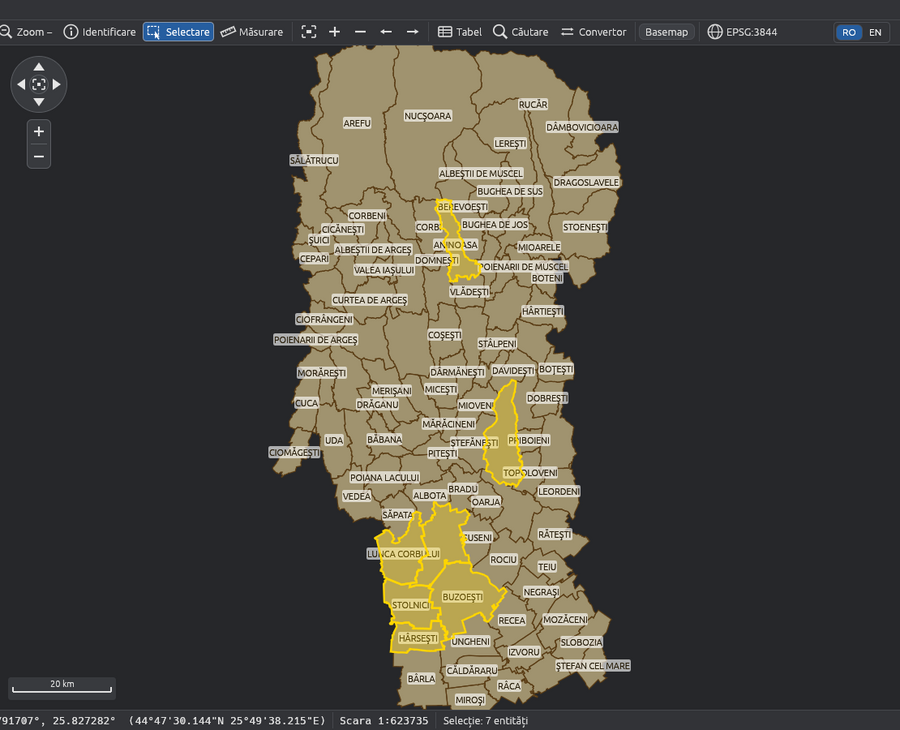
Din meniul contextual al stratului, submeniul Selecție oferă: Selectează tot, Inversează selecția, Deselectează, Zoom la selecție și Exportă selecția…; când stratul are entități selectate apare și Make Layer with selected objects (secțiunea 7.11). Aceleași operații sunt și în bara tabelului de atribute, alături de Selectează rândurile afișate (de exemplu după un filtru).
Exportul selecției. Când stratul are entități selectate, fereastra Export are opțiunea Entități: numai cele selectate (N) / toate, cu „numai cele selectate” aleasă implicit. Numele propus pentru fișier primește sufixul _selectie. Toate formatele vectoriale și reproiecția la export funcționează la fel ca pentru întregul strat.
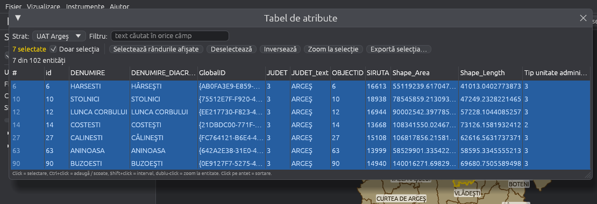
Butonul Căutare (Ctrl+F) deschide fereastra de căutare, cu două pagini.
Loc / adresă. Scrieți un nume de localitate, o adresă sau un obiectiv (de exemplu Pitești, Str. Victoriei 10 Brașov) și apăsați Enter. Aplicația caută în același timp:
Căutarea Google. Google nu permite căutarea automată fără cont, așa că sursa Google folosește serviciile oficiale Places API (New) (ca în caseta de căutare din Google Maps, inclusiv firme și obiective) și, dacă acesta nu este activat, Geocoding API (adrese). Pentru ele este nevoie de o cheie API Google Maps Platform, creată gratuit în Google Cloud Console (butonul Obține o cheie…); Google oferă lunar un număr de căutări gratuite, peste care se plătește. Cheia se scrie în câmpul Cheie API Google, care apare când este aleasă sursa Google sau Ambele, și se păstrează în setări; poate fi dată și prin variabila de mediu GOOGLE_MAPS_API_KEY.
Fără cheie se poate folosi Google Maps direct:
maps.app.goo.gl/…);Caseta recunoaște și codurile Plus afișate de Google Maps pentru orice loc: complete (8GP8PV9C+2W) sau scurte, urmate de localitate (PV9C+2W Pitești); un cod scurt fără localitate se raportează la centrul hărții.
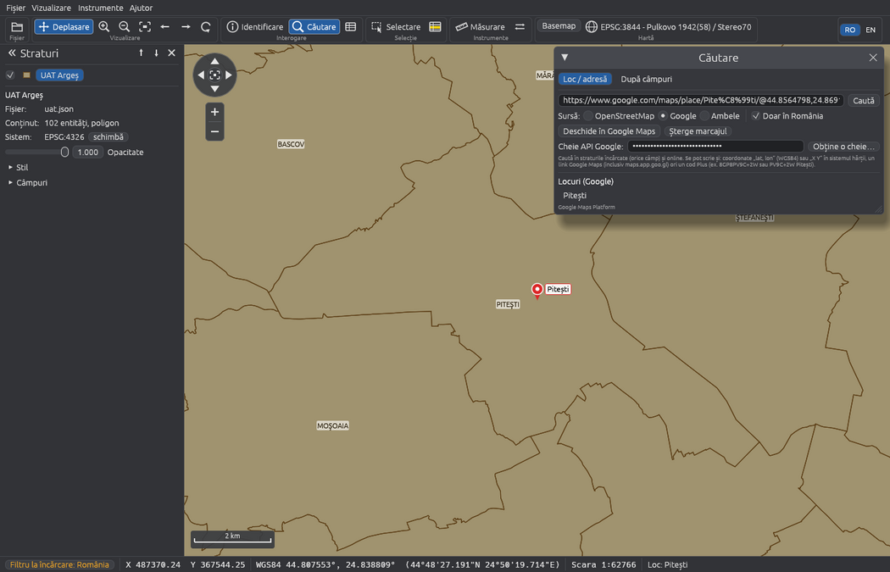
Caseta acceptă și coordonate: 44.8565, 24.8692 (latitudine, longitudine WGS84, în ordinea folosită de Google Maps) sau 486375 339707 (X Y în sistemul hărții). Harta se centrează pe punct, cu marcaj.
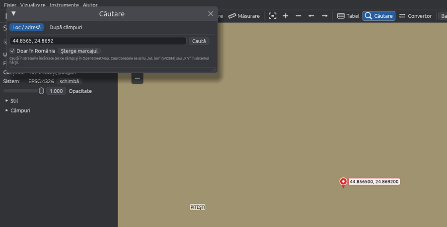
După câmpuri. Construiește o interogare pe atribute, ca un filtru SQL simplu:
DENUMIRE începe cu "s" ȘI POP > 1000.| Operator | Înțeles |
|---|---|
| = ≠ | egal / diferit (numerele se compară ca numere: 13 = 13.0) |
| conține, nu conține, începe cu, se termină cu | comparații de text, fără majuscule și diacritice |
| > ≥ < ≤ | numeric când ambele valori sunt numere, altfel alfabetic |
| este gol, nu este gol | câmpul nu are valoare / are valoare |
Rezultatele sunt listate pe strat și număr de entitate; click pe un rând face zoom la entitate. Selectează le transformă în selecție (de exemplu pentru export), Adaugă la selecție le adaugă, iar Zoom la rezultate încadrează toate rezultatele. Valorile zecimale pot fi scrise cu punct sau cu virgulă.
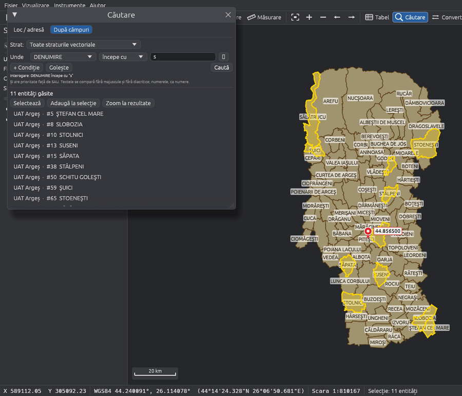
Selectare → Selectare după atribute… (Ctrl+Shift+F, lista Selectare din bara de instrumente, Selecție → După atribute… din meniul contextual al stratului sau din tabelul de atribute) selectează entitățile unui strat cu o expresie, ca în clauza WHERE din SQL sau ca în „Select by Attributes” din ArcGIS și QGIS:
admin_unit_id = 123
status = 1 AND is_active = 1
(judet = 'Argeș' OR judet = 'Olt') AND suprafata >= 5000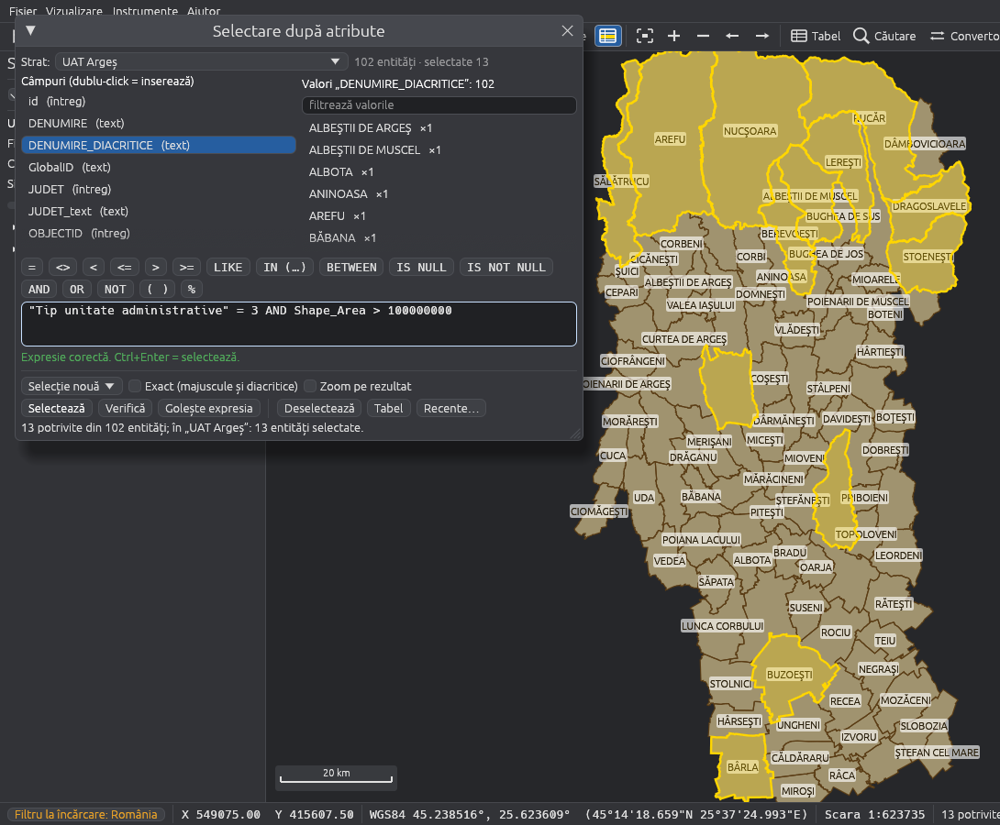
câmp = valoare. Butoanele de operatori inserează =, <>, LIKE, IN (), AND etc. în locul cursorului.Rezultatul este o selecție obișnuită (secțiunea 7.7): apare cu galben, poate fi văzut în tabel (butonul Tabel deschide tabelul cu „Doar selecția”) și exportat. Expresiile folosite se regăsesc în meniul Recente….
| Scriere | Înțeles |
|---|---|
= <> (sau !=) < <= > >= | Comparații. Numerele se compară ca numere (13 = 13.0, inclusiv în câmpurile text care conțin numere), textele alfabetic. |
AND OR NOT, paranteze | Combinarea condițiilor; AND are prioritate față de OR. Se acceptă și ȘI, SAU, NU. |
nume LIKE 'Pit%' | Potrivire după model: % = orice șir, _ = un caracter. NOT LIKE = negarea. |
cod IN (13, 14, 15) | Una dintre valori (NOT IN = niciuna). |
supr BETWEEN 100 AND 500 | Între limite, inclusiv. |
obs IS NULL, obs IS NOT NULL | Câmp fără valoare (sau text gol) / cu valoare. |
is_active, NOT is_active | Câmpul folosit singur: adevărat dacă nu este 0, gol sau false. |
'Argeș', "nr cad", [nr cad] | Textele se scriu între apostrofuri. Numele de câmpuri cu spații sau caractere speciale se scriu între ghilimele duble sau paranteze drepte. |
Textele se compară fără să țină cont de majuscule și de diacritice: judet = 'arges' găsește „Argeș” și „ARGES”. Bifa Exact (majuscule și diacritice) cere potrivire exactă. Ca în SQL, o valoare lipsă (NULL) nu îndeplinește nicio comparație: supr <> 100 nu găsește entitățile fără suprafață; pentru ele folosiți IS NULL.
--where, pentru a converti doar entitățile potrivite.Editare → Parcelare / detașare… (sau butonul Parcelare din bara de instrumente) împarte un poligon – o parcelă, un teren – în loturi de suprafețe date, cu previzualizare pe hartă. Parcelarea se face strict pe poligonul selectat în prealabil: selectați întâi un singur poligon (instrumentul Selectare, tabelul de atribute, căutarea sau selectarea după atribute); până atunci comanda și butonul sunt inactive, iar indiciul lor spune ce lipsește. Cât timp fereastra e deschisă, ea urmează selecția: dacă selectați alt poligon, parcelarea trece pe el; dacă golirea selecției sau selectarea mai multor entități lasă fără un singur poligon, loturile dispar și fereastra arată ce trebuie selectat. Calculul se face în sistemul hărții, care trebuie să fie proiectat, în metri (de exemplu Stereo 70); suprafețele sunt plane, în mp, ca în documentațiile cadastrale.
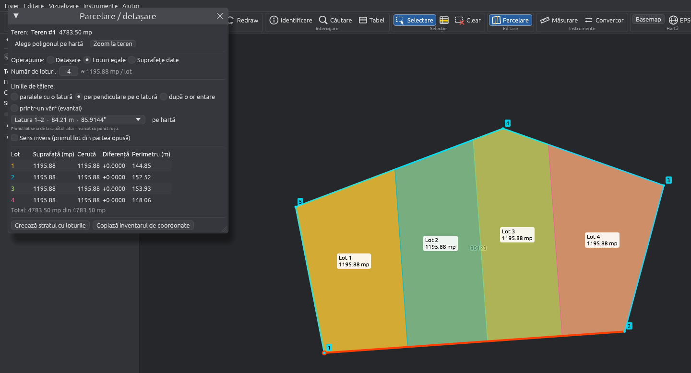
Operațiunea:
; sau pe rânduri (zecimalele cu virgulă sau punct, de exemplu 800; 1200,5; 600). Bifa Restul terenului rămâne lot separat face din ce rămâne un lot în plus; debifată, restul se adaugă la ultimul lot.Liniile de tăiere:
| Variantă | Cum se taie |
|---|---|
| paralele cu o latură | Liniile sunt paralele cu latura aleasă (desenată cu roșu); primul lot se ia de lângă ea. Util pentru fâșii cu front la un drum. |
| perpendiculare pe o latură | Liniile sunt perpendiculare pe latura aleasă; primul lot se ia de la capătul laturii marcat cu punct roșu. Așa se obțin loturi alăturate, fiecare cu front la latura aleasă. |
| după o orientare | Liniile au orientarea scrisă, în grade față de Nord, în sens orar (0° = linii Nord–Sud, primul lot la vest; 90° = linii Est–Vest). |
| printr-un vârf (evantai) | Toate liniile trec prin vârful ales (cerc roșu) și se rotesc în jurul lui; primul lot este lângă latura care urmează vârfului. |
Latura și vârful se aleg din listă – cu lungimea și orientarea fiecărei laturi – sau cu butonul pe hartă, apoi click lângă latura / vârful dorit (vârfurile sunt numerotate pe hartă). Sens invers ia primul lot din partea opusă. Esc anulează alegerea pe hartă.
Poziția fiecărei linii se calculează prin încercări succesive (bisecție) până când suprafața lotului diferă de cea cerută cu mai puțin de 0,0001 mp; tabelul din fereastră arată, pentru fiecare lot, suprafața obținută, cea cerută, diferența și perimetrul. Terenurile cu goluri (enclave) și cele din mai multe părți se împart corect. La un teren concav, o linie de tăiere poate împărți un lot în mai multe bucăți: tabelul îl marchează („2 părți”), iar o altă direcție sau alt vârf rezolvă de obicei problema.
LOT, SUPRAFATA, SUPR_CERUTA, PERIMETRU, ETICHETA (afișată pe hartă, de exemplu „Lot 1 – 500.00 mp”) și SURSA. Stratul este temporar: exportați-l (SHP, DXF, GeoPackage, KML…) ca să-l păstrați; poate fi tipărit ca orice strat.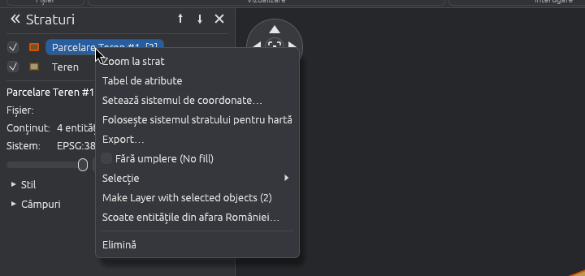
Când un strat are entități selectate – direct pe hartă, din tabel, prin căutare sau prin selectarea după atribute –, click dreapta pe el în panoul Straturi oferă Make Layer with selected objects (N). Comanda adaugă în hartă un strat nou, <strat> – selecție (N), care conține doar entitățile selectate, cu toate atributele, același sistem de coordonate și același stil (conturul devine portocaliu, ca să se distingă). Aceeași comandă este și în Editare → Strat nou din obiectele selectate și în meniul / lista Selectare, pentru stratul activ.
Stratul nou este temporar (în panoul Straturi, la Fișier, apare „temporar, în memorie”): nu se salvează în spațiul de lucru, deci exportați-l ca să-l păstrați. La salvarea spațiului de lucru, bara de stare amintește câte straturi temporare n-au fost incluse.
Lista Hartă din bara de instrumente (Sistemul hărții…, sau Vizualizare → Sistemul de coordonate al hărții…) schimbă sistemul în care este afișată harta. Toate straturile sunt reproiectate din mers.
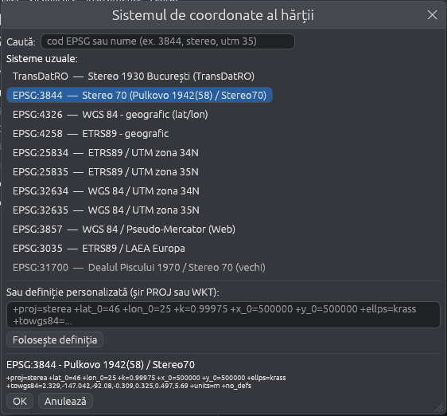
Orice transformare între Stereo 70 și ETRS89/WGS84 (afișare, export, conversie în lot, rastere, convertor) folosește implicit TransDatRO, cu precizie centimetrică. Din Instrumente → Reproiecție Stereo 70 cu TransDatRO se poate trece pe transformarea Helmert cu 7 parametri (EPSG:15994), cu precizie de 1–3 m, identică cu cea din alte programe GIS. În afara zonei acoperite de gridurile TransDatRO (în afara României), aplicația folosește automat Helmert.
Stereo 1930 apare ca sistem separat (căutați „stereo 30”). Se transformă doar prin TransDatRO, în zona acoperită de grid. În fișierele .prj și GeoTIFF este scris ca sistem local, deoarece alte programe GIS nu au o definiție pentru el.
Gridurile oficiale sunt incluse în aplicație. Când ANCPI publică griduri noi (de exemplu EGG97_QGRJ.GRD), copiați-le într-un dosar numit grile lângă cadastru.exe. Aplicația le folosește pe acestea în locul celor incluse.
Selectați stratul, apoi Fișier → Export strat selectat… (sau click dreapta → Export…). Alegeți:
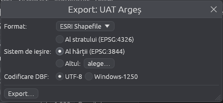
Rasterele se exportă în GeoTIFF, ASCII Grid, PNG sau JPEG. La reproiectare se pot alege rezoluția de ieșire și metoda de reeșantionare (cel mai apropiat vecin sau biliniară). Straturile ECW, MrSID și JPEG 2000 se pot doar vizualiza și nu se exportă (secțiunea 3.10).
Fișier → Export toate straturile vectoriale în GeoPackage… scrie toate straturile vectoriale deschise într-un singur fișier .gpkg, câte un strat pentru fiecare.
Un desen DXF amestecă puncte, linii și poligoane, pe mai multe layere AutoCAD, în timp ce un shapefile poate conține un singur tip de geometrie. Fișier → Export pe tipuri de geometrie (DXF » SHP puncte / linii / poligoane)… (sau, din meniul contextual al unui strat DXF, Export pe tipuri de geometrie (SHP)…) scrie:
<nume>_puncte.shp: toate punctele din toate layerele DXF: puncte, texte (cu textul în câmpul Text), punctele din blocuri;<nume>_linii.shp: toate liniile, poliliniile deschise, arcele, spline-urile;<nume>_poligoane.shp: poliliniile închise, cercurile, elipsele, hașurile și suprafețele pline.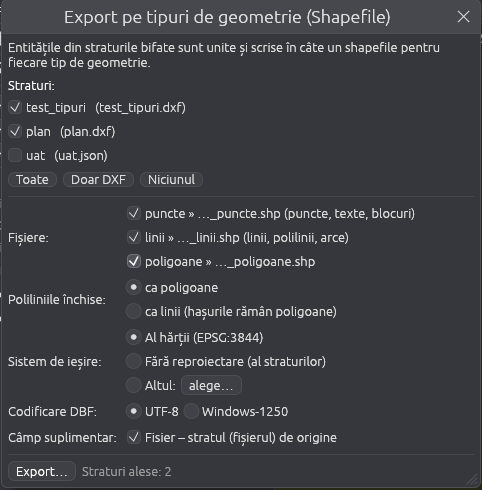
În fereastră se bifează straturile incluse. Implicit sunt bifate toate straturile DXF încărcate; mai multe desene sunt unite în aceleași trei fișiere. Layerul AutoCAD al fiecărei entități rămâne în câmpul Layer, iar câmpul Fisier arată desenul din care provine.
Opțiuni: tipurile scrise (puncte, linii, poligoane); poliliniile închise ca poligoane (implicit) sau ca linii, caz în care hașurile și suprafețele pline rămân poligoane; numai entitățile selectate (secțiunea 7.7); sistemul de ieșire (al hărții, fără reproiectare sau altul); codificarea DBF.
Numele ales în dialogul de salvare este numele de bază; sufixele se adaugă automat. Tipurile fără entități nu produc fișiere și sunt menționate în bara de stare.
_puncte, _linii, _poligoane; fereastra de mai sus adaugă unirea mai multor desene și opțiunile de mai sus. Pentru multe fișiere, din linia de comandă: cadastru-cli split (capitolul 12).Instrumente → Conversie fișiere în lot… convertește toate fișierele dintr-un dosar.
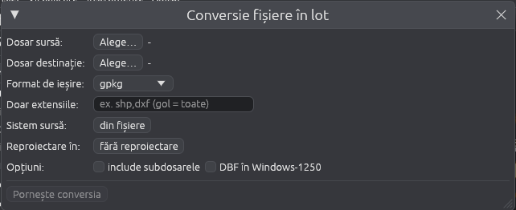
shp,dxf).La final, jurnalul arată fiecare fișier convertit și erorile.
Un spațiu de lucru salvează starea hărții: lista straturilor (cu căile fișierelor), ordinea, vizibilitatea, opacitatea, stilurile, sistemul fiecărui strat, sistemul hărții, vederea curentă și harta de fundal. Datele nu sunt copiate în spațiul de lucru.
.cgw asociat cu aplicația.exemple\test.cgw: un relief cu umbrire, parcele cu etichete și puncte dintr-un CSV.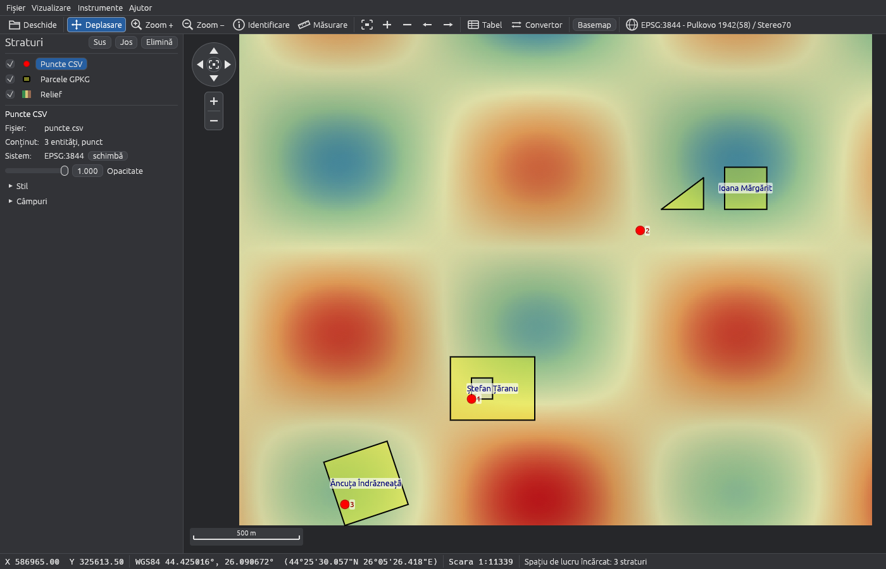
Fișier → Tipărire… (Ctrl+P) și Fișier → Salvează ca PDF… compun o planșă din vederea curentă a hărții.
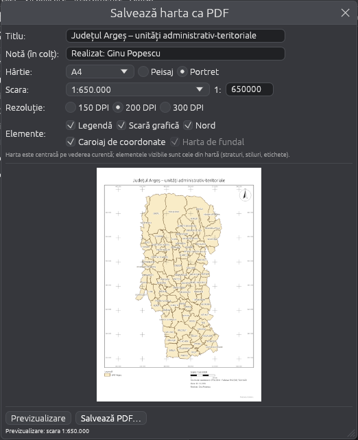
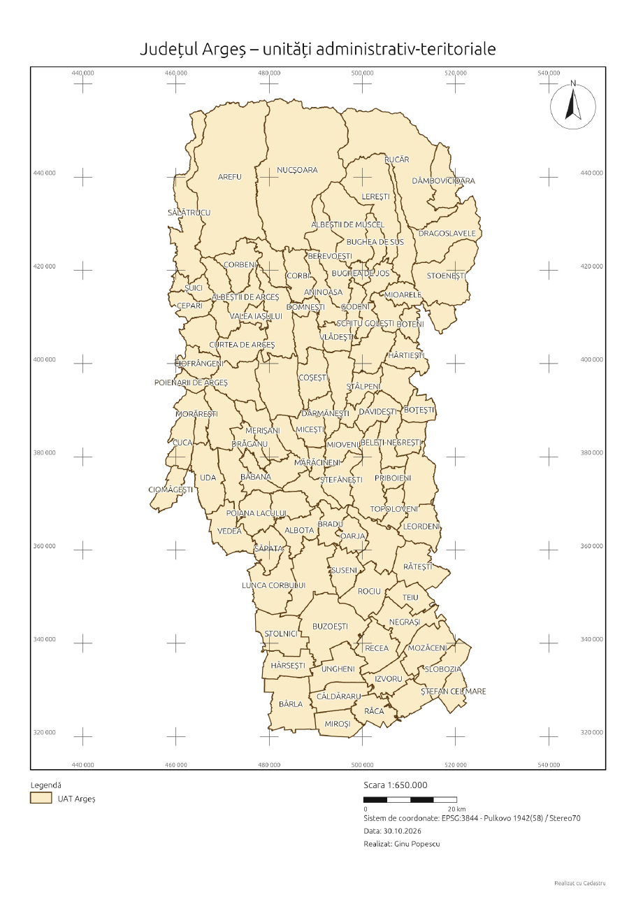
| Setare | Descriere |
|---|---|
| Titlu | Textul de deasupra hărții. |
| Notă (în colț) | Un rând în zona de informații, de exemplu „Întocmit: …”. |
| Hârtie | A4, A3, A2, A1 sau A0, peisaj sau portret. |
| Scara | Scara vederii curente, una din listă (1:200 … 1:1.000.000) sau oricare alta, scrisă în caseta 1:. Harta este centrată pe vederea curentă. |
| Rezoluție | 150, 200 sau 300 DPI. Pentru hârtie foarte mare la rezoluție mare, aplicația reduce automat rezoluția ca să nu depășească memoria. |
| Elemente | Legendă, scară grafică, săgeata nordului, caroiaj de coordonate și harta de fundal; fiecare se poate dezactiva. |
cadastru-cli.exe face aceleași conversii și transformări fără interfață grafică, pentru scripturi .bat, PowerShell sau Task Scheduler. Deschideți un Command Prompt în dosarul aplicației.
| Comandă | Rol |
|---|---|
info | Straturi, câmpuri, sistem, extindere; --features N arată și primele N entități. Funcționează și pentru ECW / MrSID / JPEG 2000 (prin GDAL), care însă nu se convertesc. |
convert | Conversie de format și/sau reproiecție a unui fișier. |
batch | Conversia tuturor fișierelor dintr-un dosar. |
transform | Transformarea unor coordonate (argumente sau intrare standard). |
transdatro | Fișiere în formatul programului TransDatRO. |
crs | Definiția unui sistem sau căutare după nume. |
split | Unește fișiere DXF (sau alte fișiere vectoriale) și scrie câte un shapefile pe tip de geometrie: _puncte, _linii, _poligoane. |
formats | Lista formatelor. |
cadastru-cli info parcele.shp --features 3
cadastru-cli convert parcele.shp parcele.gpkg
cadastru-cli convert parcele.shp parcele_wgs.kml --t-srs EPSG:4326
cadastru-cli convert puncte.csv puncte.shp --x-field Y --y-field X --s-srs EPSG:3844
cadastru-cli convert lucrare.zip D:\iesire\cadastru.shp
cadastru-cli convert arges.gdb arges.gpkg
cadastru-cli batch D:\date D:\date_gpkg --to gpkg --t-srs EPSG:25835 -r -o
cadastru-cli transform --s-srs EPSG:3844 --t-srs EPSG:4326 --dms 588000 328000
cadastru-cli transdatro -d etrs89-st70 puncte_gnss.txt -o puncte_st70.txt
cadastru-cli split D:\iesire\plan.shp desen1.dxf desen2.dxf --s-srs EPSG:3844
cadastru-cli split D:\iesire\toate.shp D:\desene -r --inchise-ca-linii -o
cadastru-cli convert adrese.gpkg adrese_ro.shp --doar-romania
cadastru-cli convert uat.shp uat_active.gpkg --where "status = 1 AND is_active = 1"
cadastru-cli batch D:\europa D:\romania --to gpkg --doar-romania -r -oFiltre la citire (pentru info, convert, batch și split): --doar-romania păstrează doar entitățile aflate în întregime în interiorul României (aceeași zonă ca în aplicație, secțiunea 3.8); --zona-3844 "minX,minY,maxX,maxY" folosește alt dreptunghi; --partial păstrează și entitățile care doar ating zona; --where "EXPRESIE" păstrează doar entitățile care îndeplinesc expresia (sintaxa din secțiunea 7.9). Filtrele se pot combina. La DXF, punctele cu „RTCM” în descriere sunt eliminate (secțiunea 3.9); --dxf-pastreaza-rtcm le păstrează.
La split, intrările pot fi fișiere sau dosare (din dosare se iau toate fișierele .dxf, cu -r și din subdosare). Opțiuni: --fara-puncte, --fara-linii, --fara-poligoane, --inchise-ca-linii, --fara-camp-fisier, plus --s-srs, --t-srs, --out-encoding și -o.
Opțiuni frecvente: --s-srs (sistemul sursă), --t-srs (reproiecție), -o (suprascrie), --out-encoding cp1250 (DBF pentru programe vechi), --layer (un singur strat), --fara-transdatro (Stereo 70 cu Helmert). Lista completă: cadastru-cli <comandă> --help și documentația tehnică. Codul de ieșire este 0 la succes, 1 la eroare și 2 dacă o conversie în lot a avut erori.
| Tastă | Acțiune |
|---|---|
| F1 | Manualul de utilizare |
| F5 | Redraw: curăță grafica temporară și redesenează harta |
| Ctrl+L | Ascunde / arată panoul Straturi |
| Ctrl+O | Deschide fișiere |
| Ctrl+S | Salvează spațiul de lucru |
| Ctrl+P | Tipărire |
| Home | Extindere completă |
| + / − | Mărire / micșorare |
| P Z X I S M | Deplasare / Zoom + / Zoom − / Identificare / Selectare / Măsurare |
| Ctrl+F | Căutare |
| Ctrl+Shift+F | Selectare după atribute |
| Ctrl+Shift+A | Deselectează tot |
| Săgeți | Deplasare cu un sfert de ecran |
| Backspace / Alt+→ | Vederea anterioară / următoare |
| T | Tabelul de atribute |
| Esc | Anulează măsurarea și evidențierea; cu instrumentul Selectare golește selecția |
| Dublu-click | Zoom ×2 (Deplasare) sau încheierea măsurării |
| Click dreapta | Meniul contextual al hărții sau al stratului |
Lista este disponibilă și în aplicație, la Ajutor → Scurtături și utilizare.
| Locație | Conținut |
|---|---|
%APPDATA%\Cadastru\setari.json | Limba interfeței, tema, etichetele, controlul de navigație, metoda pentru Stereo 70, opțiunile CGXML, opacitatea hărții de fundal, ultimul șablon XYZ, dosarul GDAL ales pentru ECW / MrSID. |
%LOCALAPPDATA%\Cadastru\tile-cache\ | Cache-ul hărților de fundal. |
%LOCALAPPDATA%\Cadastru\Manual_Cadastru_1.13.0.pdf | Copia manualului deschisă din meniul Ajutor. |
grile\ lângă cadastru.exe | Opțional: griduri TransDatRO mai noi (secțiunea 8.4). |
Ștergerea fișierului setari.json readuce setările implicite. Aplicația nu scrie nimic în registrul Windows și nu are nevoie de drepturi de administrator.
.cpg. Pentru programele vechi, exportați cu codificarea Windows-1250.cadastru-cli.exe funcționează oricând.cadastru-cli convert … --res 1). Ortofotoplanurile ECW / JPEG 2000 se citesc pe ferestre și nu au această limită.gdal-mrsid). Fereastra arată ce drivere sunt disponibile.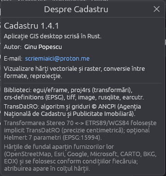
Cadastru 1.13.0
Autor: Ginu Popescu
E-mail: scriemiaici@proton.me
Aplicația este scrisă în Rust și distribuită cu codul sursă, sub licența MIT.
TransDatRO: algoritm și griduri © ANCPI (Agenția Națională de Cadastru și Publicitate Imobiliară).
Hărțile de fundal aparțin furnizorilor lor (OpenStreetMap, Esri, Google, Microsoft, CARTO, BKG, EOX) și se folosesc conform condițiilor fiecăruia.
ECW este marcă Hexagon; MrSID este marcă Extensis (LizardTech). Citirea lor se face prin GDAL-ul instalat de utilizator, sub licențele acestor biblioteci.
Datele din figurile acestui manual: limitele unităților administrativ-teritoriale ale județului Argeș și datele de test din dosarul exemple.